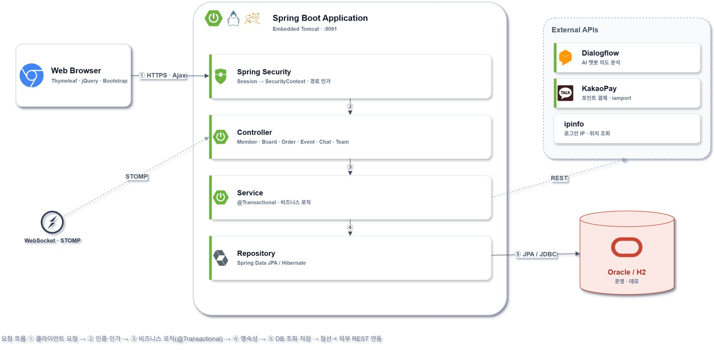

Backend Developer
이상혁
Lee Sang Hyeok
운영까지 생각하면서
서비스를 만듭니다.
- kljl6773@gmail.com
- 01failstop주문 멱등성과 옛 리더 차단을 구현한 모의 거래소03
- 02SafetyNevi재난문자를 지도 위 위험 구역으로07
- 03sangkwon-platform-poly220만 행 재적재와 서버 두 대의 요청 제한10
- 04DeliveryPro묶음배달 방문 순서를 서버가 계산12
- 05appintoss-meetup출시 전 보안 문제를 풀고 낸 토스 미니앱14
- 06DevHub · polytalk끝난 뒤 다시 고친 커뮤니티, 종단 간 암호화 채팅15
중복 요청과 서버 증설, 느린 응답에서 생기는 문제를 주로 고쳤습니다
같은 주문이 두 번 들어오는 경우, 서버가 두 대가 되면서 카운터를 서버마다 따로 세는 경우, 응답이 느린 원인을 찾는 일을 주로 했습니다. 고친 동작은 테스트로 고정하고, 성능은 고치기 전과 후를 같은 조건에서 쟀습니다.
01
데이터가 어긋나지 않게
같은 주문이 두 번 들어와도 한 번만 처리하고, 대량 적재가 중간에 끊기면 통째로 되돌립니다. 원장이 맞는지는 SQL로 확인합니다.
02
서버가 여러 대여도 같은 규칙으로
리더 권한은 리스와 epoch로 확인하고, 요청 제한과 배치 중복 실행 방지는 DB에 두어 서버들이 함께 씁니다. 서버 수만큼 한도가 늘어나거나 같은 배치가 두 번 도는 일을 막기 위해서입니다.
03
느린 원인은 측정해서 찾았습니다
k6 부하 시험에서 시설 조회 응답이 387KB인 것을 찾아 55KB로 줄였습니다. 가상 스레드가 묶여 서버가 멈추던 문제는 synchronized를 ReentrantLock으로 바꿔 고쳤습니다.
지금까지 해 온 프로젝트
주로 쓰는 기술
- 언어
- Java · Python · TypeScript · SQL
- 서버
- Spring Boot · Spring Security · JPA · FastAPI
- 데이터
- PostgreSQL · Oracle · Redis · H2
- 실시간·연동
- WebSocket(STOMP) · REST · OAuth 로그인
- 시험·배포
- JUnit 5 · Testcontainers · k6 · GitHub Actions
- 학력
- 인하공업전문대학교 정보통신공학과 학사(전공심화) 2026.02
- 자격·수상
- 정보처리기사 · 네트워크관리사 2급 · 폴리텍 프로젝트작품 경진대회 은상
혼자 진행한 프로젝트 · 2026년 7월 ~ 10월
주문이 중복되거나 처리 여부를 알 수 없는 상태로 남지 않게 주문 경로를 나눴습니다
실제 돈은 다루지 않지만 거래소처럼 동작하는 모의 거래소입니다. 사용자와 봇이 같은 주문 API로 주문을 넣으면 Java 매칭 엔진이 체결하고, 결과는 PostgreSQL 원장에 남습니다. 서버가 죽거나 DB가 끊겨도 주문 기록과 잔고가 어긋나지 않게 하는 데 가장 공을 들였습니다. Claude와 Codex를 함께 썼고 설계 결정은 제가 했습니다.
POST /orders
주문 API
클라이언트가 만든 주문 키로 같은 주문을 알아보고, 내용이 다르면 거절합니다.
command_journal
명령 저널
엔진보다 먼저 DB에 커밋합니다. 리더 권한이 확인돼야 한 줄이 들어갑니다.
engine
매칭 엔진
Spring도 I/O도 시계도 쓰지 않는 순수 Java라, 같은 명령이면 늘 같은 체결이 나옵니다.
ledger
원장과 잔고
금액은 BigDecimal과 NUMERIC(40,18)로만 다루고, 자산마다 원장 합계는 0이어야 합니다.
주문 API
같은 주문을 여러 번 다시 보내도 주문은 하나만 생깁니다
- 주문 키는 클라이언트가 만듭니다
client_order_id가 없으면 받지 않습니다. 서버가 키를 대신 만들면, 응답을 못 받고 다시 보낼 때마다 새 주문이 생길 수 있기 때문입니다. - 같은 키면 내용을 비교합니다요청 본문을 JCS(RFC 8785)로 정규화한 뒤 SHA-256으로 비교합니다. 필드 순서나 공백이 달라도 같은 주문이면 같은 값이 나옵니다.
- 엔진보다 저널에 먼저 기록합니다명령을
command_journal에 커밋한 다음에야 엔진에 넘깁니다. 엔진이 받은 명령은 모두 DB에 먼저 남아 있습니다. - 커밋됐는지 모를 때는 DB에 다시 묻습니다기록하는 순간 연결이 끊기면, DB 함수로 저널에 실제로 들어갔는지 확인합니다. 그래도 답을 못 받으면 503을 돌려주되 주문 키는 지우지 않습니다.
같은 키로 다시 보냈을 때 돌아가는 응답
| 상황 | 응답 |
|---|---|
| 같은 키, 같은 내용 | 200처음 만든 주문을 그대로 돌려줍니다 |
| 같은 키, 다른 내용 | 409duplicate_client_order_id |
| 앞선 요청이 아직 처리 중 | 409order_in_progress · Retry-After |
| DB에 닿지 못함 | 503Retry-After: 1 · 주문 키는 남겨 둠 |
POST /api/v1/orders
{"client_order_id":"c-0721-0001","market":"KRW-BTC","side":"bid", ...}
← 201 Created
응답이 오지 않아 같은 요청을 다시 보내면
← 200 OK X-Idempotent-Replay: true
응답을 받지 못한 클라이언트는 같은 키로 다시 보내면 됩니다. 주문이 들어갔는지 모르는 상태로 남지 않게 하려고 응답을 이렇게 나눴습니다.
앱 서버 두 대, 주문장을 바꾸는 서버는 하나
잠깐 멈췄다 돌아온 옛 리더의 쓰기를 리스와 epoch로 막았습니다
리더만 기한이 있는 리스를 쥐고, 리더가 바뀔 때마다 epoch를 1씩 올립니다. 까다로운 건 잠깐 멈췄던 옛 리더가 자기가 아직 리더라고 믿고 쓰기를 이어 가는 경우였습니다. 그래서 권한을 확인하는 일과 쓰는 일을 나누지 않고, SQL 한 문장 안에 넣었습니다.
-- 저널 기록(줄여서 옮김) INSERT INTO command_journal (...) SELECT ... FROM leader_lease WHERE holder = :me AND epoch = :epoch AND lease_until > clock_timestamp() FOR KEY SHARE;
세 조건 중 하나라도 틀리면 0행이 들어가고, 옛 리더의 쓰기는 거기서 끝납니다. 확인과 기록 사이에 틈이 없어서, 그 사이에 리더가 바뀌는 일도 생기지 않습니다.
장애 시험 중 찾아서 고친 문제
- DB 지연DB를 느리게만 했는데 리더가 바뀌었습니다정산 트랜잭션의
FOR SHARE가 리스 갱신을 막고 있었습니다.FOR KEY SHARE와 유일 인덱스로 바꾼 뒤, 같은 시험 세 번 모두 리더가 그대로였습니다. - 연결 끊김연결이 끊기면 리더 없이 멈췄습니다트랜잭션을 연 채 멈춘 세션이 잠금을 쥐고 있었습니다. DB에 10초 제한과 keepalive를 걸자 고친 직후 시험에서 13.9초 만에 이어받았고, 이후 28회 반복에서는 길어도 13.5초였습니다.
- 리더 교대새 리더가 이미 끝난 리스를 받았습니다만료 시각을 잠금을 기다리기 전부터 세고 있었습니다. 잠금을 얻은 뒤부터 세도록 고치자 이어받기가 10초 안팎으로 고르게 나왔습니다.
- 옛 리더물러난 리더가 500을 돌려줬습니다리더가 아닌 서버는 503을 돌려주게 바꿨습니다. 그 뒤로 다시 돌린 시험에서는 주문 500이 한 건도 나오지 않았습니다.
장애 시험과 부하 시험
장애 시험 뒤에는 원장이 맞는지 SQL로 확인했습니다
장애를 넣은 뒤에는 SQL 불변식으로 판정합니다. 어긋난 행이 하나라도 나오면 실패입니다.
- 자산마다 원장 합계가 0인가
- 잔고가 원장을 다시 계산한 값과 같은가
- 명령 저널에 빈 번호가 없는가
이 검사를 돌리다가, 비동기 복제에서는 커밋이 확인된 쓰기도 사라지는 경우를 찾았습니다. 그래서 Patroni 엄격 동기 복제로 바꿨고, 동기 예비 DB가 없을 때는 앱이 주문을 423으로 막습니다.
비동기 복제
36/ 122건
예비 DB를 8초 멈춘 뒤 주 DB를 끄자, 커밋이 확인된 시험용 쓰기 122건 중 36건이 사라졌습니다.
엄격 동기 복제로 바꾼 뒤
0건
같은 시험에서 사라진 주문이 없었습니다. 두 시험 모두 제 PC에서 돌렸습니다.
성능 병목과 수정 결과
| 무엇이 막혔나 | 어떻게 고쳤나 | 전 → 후 |
|---|---|---|
| 가상 스레드가 묶여 서버가 멈춤 | DB 왕복을 감싼 synchronized를 ReentrantLock으로 | 접수 30% → 100% p95 60.0초 → 1.2초 |
| 호가 집계가 주문 처리를 막음 | 집계 결과를 1초 동안 캐시 | 초당 40 → 80건 |
| 모든 주문이 한 줄로 기다림 | 마켓마다 접수 락을 따로 | 초당 112 → 152건 |
모두 제 PC의 Docker에서 같은 조건으로 고치기 전과 후를 잰 값입니다. 가상 스레드 시험만 CPU를 2개로 묶었습니다.
4인 팀 Tech Lead · PM · 2025년 9월 ~ 12월 · 졸업작품
재난문자를 지도 위 위험 구역으로 바꾸고, 가까운 대피소로 안내했습니다
재난문자는 글자뿐이라 내 주변이 위험한지 바로 알기 어렵습니다. 그래서 행안부 재난문자를 받아 지도에 위험 구역으로 그리고, 지금 운영 중인 가까운 대피소까지 길을 안내하는 서비스를 만들었습니다. 평가 기간에는 실제 도메인에서 일주일 동안 운영했습니다.
제가 한 일 지도(위험 구역과 경로), WebSocket, Python AI 서버, 관리자 기능, 배포, 그리고 팀원과 함께 짠 Oracle 스키마. 게시판 API와 처음 수집기, 화면 퍼블리싱은 팀원이 맡았습니다.
- 공식 단계가 있으면 그대로, 없을 때만 AI에게공식 API의 긴급단계가 '위급'이나 '긴급'이면 바로 60분짜리 위험 구역을 만듭니다. 단계가 비어 있을 때만 따로 띄운 Python 서버의 분류 모델에게 묻습니다.
- DB 커밋이 끝난 뒤에만 알립니다롤백됐는데 알림이 먼저 나가면 없는 재난을 알리게 됩니다. 그래서
afterCommit에서만 WebSocket으로 보냅니다. - 서버를 늘려도 모두가 받도록운영 구성에서는 Kafka를 거치게 하고 서버마다 컨슈머 그룹을 따로 두어, 어느 서버에 붙은 사용자든 같은 알림을 받게 짰습니다. 평가 기간에는 서버 한 대로 돌렸습니다.

경로 탐색
위험 구역 안에 있거나 가는 길이 구역을 지나는 대피소는 추천에서 뺐습니다
- 반경을 넓혀 가며 찾습니다위경도 사각형 범위로 5km, 20km, 100km 순으로 넓혀, 후보가 3곳 이상 나올 때까지 찾습니다.
- 구역 안의 대피소는 뺍니다위험 원 안에 있는 대피소는 거리와 상관없이 후보에서 제외합니다.
- 가는 길이 구역을 지나도 뺍니다점과 선분 사이의 최단거리를 계산해, 출발지에서 대피소로 가는 길이 위험 원을 가로지르는지 봅니다.
- 추천은 기준 세 가지로운영 중인 가장 가까운 곳, 가장 가까운 곳, 수용 인원이 가장 큰 곳을 하나씩 고릅니다. 실제 도로 경로는 Kakao Mobility로 받고, 그 경로가 위험 원을 지나면 화면에서 경고합니다.
처음에는 운영 중인 대피소가 추천에 제대로 잡히지 않았습니다. 운영 여부를 '정상·영업·운영' 값으로 판단했는데, 실제 데이터에는 '사용중'으로 들어 있었습니다. '사용중'만 운영 중으로 보도록 고치고, 이 규칙을 테스트로 고정했습니다.
졸업 뒤 다시 열어 손본 작업 · 2026년
시설 조회 응답을 387KB에서 55KB로 줄였습니다
k6로 동시 사용자 60명까지 부하를 걸어 보니, 시설 조회 한 번이 1,500건, 387KB를 내려보내고 있었습니다. 필드별로 따지면 주소가 25.2%였는데, 지도 마커에는 주소가 필요 없었습니다. 그래서 목록 전용 DTO를 따로 만들어 주소를 빼고 응답 압축을 켰습니다.
처음에는 압축을 켜도 효과가 잡히지 않았는데, k6가 Accept-Encoding을 보내지 않고 있었습니다. 시나리오부터 고쳤습니다.
| 시설 조회 | 전 | 후 |
|---|---|---|
| 응답 크기 | 387KB | 55KB |
| p95 응답 시간 | 569ms | 216ms |
| 처리량 | 초당 347건 | 초당 579건 |
개인 PC, H2 DB, 서버 1대, k6 최대 동시 사용자 60명에서 같은 시나리오로 잰 전후 비교입니다.
AI 분류 모델의 데이터 누수 수정
재난문자의 위험도를 가르는 모델을 처음 돌렸을 때 정확도 99%가 나왔습니다. 너무 높아서 확인해 보니, 데이터를 부풀린(업샘플) 뒤에 학습용과 평가용을 나눠 같은 문장이 양쪽에 들어가 있었습니다. 먼저 나누고, 불균형은 클래스 가중치로 다루도록 고쳤습니다.
위험한 문자를 놓치지 않는 쪽을 먼저 택했고, 그 대가로 정밀도는 0.57입니다. 그래서 AI는 공식 단계가 비어 있을 때만 보조로 씁니다.
그 밖에 손본 보안
웹푸시 주소 검사
https만 받고 localhost와 IP 주소는 거절해, 서버가 내부망으로 요청을 보내게 하는 공격(SSRF)을 막았습니다.
IP별 요청 제한
API는 분당 300건, 푸시 등록은 30건까지 받습니다. X-Forwarded-For는 설정을 켰을 때만 믿습니다.
로그인 잠금
5번 틀리면 잠그고, 대소문자만 바꾼 아이디도 같은 계정으로 셉니다.
가입 여부 숨기기
비밀번호 찾기에서 없는 계정에도 가짜 질문을 보여 줘, 가입했는지가 드러나지 않습니다.
4인 팀 팀장 · 2026년 7월
220만 행을 다시 넣는 동안에도 화면에는 잘린 데이터가 나오지 않습니다
서울시 상권 1,650곳의 매출, 유동인구, 점포 수를 지도에서 비교하는 서비스입니다. 저는 상권분석 조회 API와 지도, 팀 공통 기반(응답, 예외, 배치, 요청 제한, 보안), 배포를 맡았습니다.

- 지우고 넣기를 한 트랜잭션으로DELETE와 INSERT를 한 트랜잭션에 묶어, 커밋 전까지 화면은 이전 데이터를 그대로 봅니다.
- 덜 받았으면 통째로 되돌립니다API가 알려 준 전체 건수보다 적게 받았거나 건너뛴 행이 하나라도 있으면 전부 롤백합니다. 5,000행씩 넣다 실패하면 그 묶음만 한 줄씩 다시 넣습니다.
- 같은 적재가 두 번 돌지 않게서버가 두 대라 같은 데이터셋을 동시에 적재할 수 있습니다. 함수 기반 유니크 인덱스로 '실행 중' 기록을 데이터셋마다 하나로 묶어, 겹치면 나중 것이 건너뜁니다.
- 멈춘 작업은 하트비트로 판단합니다실행 중에는 5분마다 하트비트를 남기고, 서버가 켜질 때 15분 넘게 소식이 없는 작업만 실패로 정리합니다. 시작 시각으로 판단하면 롤링 배포 중에 다른 서버의 정상 작업까지 덮을 수 있었습니다.
서버 두 대, DB 하나
서버가 두 대여도 요청 제한은 한 곳에서 셉니다
서버마다 따로 세면
10회
로그인 한도가 10분에 5회여도, 서버 두 대가 따로 세면 10회까지 통과합니다.
DB에서 함께 세면
5회
어느 서버로 들어와도 같은 줄을 세서, 한도가 그대로 지켜집니다.
그래서 공유 테이블에 먼저 1을 더한 다음 한도를 확인합니다. 같은 새 키가 동시에 처음 들어와 기본 키가 부딪히면 UPDATE로 한 번 더 시도하므로, 세는 데서 빠지는 요청이 없습니다.
MERGE INTO RATE_LIMIT_BUCKET b
USING (SELECT ? RATE_KEY, ? NOW_AT, ? CUTOFF_AT FROM dual) s
ON (b.RATE_KEY = s.RATE_KEY)
WHEN MATCHED THEN UPDATE SET
b.HIT_COUNT = CASE WHEN b.WINDOW_STARTED_AT < s.CUTOFF_AT
THEN 1 ELSE b.HIT_COUNT + 1 END, ...
WHEN NOT MATCHED THEN INSERT ... HIT_COUNT = 1
관리자 로그인(30분에 10회)과 아이디 중복 확인(1분에 30회)에도 같은 방식을 썼습니다.
지도와 상권 요약 조회
- 무거운 경계와 숫자를 나눴습니다상권 경계(GeoJSON)는
/geo로, 매출 같은 숫자는/summary로 따로 받습니다. 화면은 필요한 쪽만 다시 부릅니다. - 적재 시점이 달라도 빈 값이 나오지 않게매출, 점포, 유동인구, 변화지표를 쿼리 하나로 모으되, 각 데이터는 매출의 최신 분기를 넘지 않는 자기 최신 분기를 씁니다.
- 결과에 상한을 두었습니다요약은 2만 행까지, 매출 목록은 필터를 꼭 받고 5,000행까지만 돌려주며, 잘렸는지를 응답에 표시합니다.
- 응답과 예외는 한 가지 모양으로모든 API가 같은 응답 형식을 쓰고, 제약 위반과 낙관적 락 충돌은 409, 처리하지 못한 예외는 내부 메시지를 숨긴 500으로 돌려줍니다.
5인 팀 조장 · 2025년 1월 ~ 2월
라이더가 어느 집부터 들를지 서버가 계산합니다

- 도로망을 방향이 있는 그래프로일방통행과 건널 수 없는 길을 담으려고, 데모용 격자 도로망(25×21)을 방향 그래프(CSR)로 만들었습니다. 간선 값은 도로 종류별 속도로 구한 소요 시간입니다.
- 배달지를 가까운 교차로에 붙입니다400m 격자 색인으로 찾고, 1,500m 넘게 떨어지면 구역 밖으로 봅니다.
- 정차지마다 다익스트라 한 번목적지를 다 찾으면 바로 멈추고, 정차지끼리의 소요 시간표를 만듭니다.
- 방문 순서는 Held-Karp로12곳까지는 정확한 답을 구하고, 그보다 많으면 최근접 이웃과 2-opt 근사로 내려가며 정확한 답인지 함께 표시합니다.
- 순서와 경로를 한 응답으로계산한 순서를 DB에 저장하고 구간 좌표와 함께 돌려주므로, 화면의 경로와 저장된 순서가 어긋나지 않습니다.
직선으로 208m인 두 집이 도로로는 1,876m였고, 갈 때 247.7초, 올 때 97.6초가 걸렸습니다. 일방통행이 반영되는지는 이 값으로 테스트에 고정해 두었습니다.
조장으로 맡은 서버 공통 부분
다섯 명이 만든 API의 응답 모양을 하나로 맞췄습니다
01
응답과 예외 규약
API마다 응답 모양이 달랐고, 실패를 null이나 true/false로 알리는 곳도 있었습니다. 응답은 ApiResponse 하나로 감싸고, 실패는 오류 코드 8종과 BusinessException으로 알립니다. 예전 핸들러와 부딪히지 않게 적용 범위도 좁혔습니다.
02
트랜잭션은 서비스에서
트랜잭션 경계를 서비스 계층으로 옮기고 조회에는 readOnly를 붙였습니다. open-in-view도 꺼서 지연 로딩이 화면까지 새어 나가지 않습니다.
03
소셜 로그인 3사
네이버, 구글, 카카오의 인가 코드 교환과 프로필 조회를 Apache HttpClient로 직접 호출했습니다. 카카오는 응답 구조가 달라 따로 읽었고, 비밀번호는 BCrypt로 저장합니다.
04
받아서 바로 실행되게
h2 프로파일에서 Oracle 호환 모드로 띄우고 데모 데이터를 넣습니다. 지도 키가 없으면 서버가 계산한 경로를 SVG로 그려, 외부 키 없이도 경로 계산 결과가 보입니다.


4인 팀 팀장 · 2026년 6월 · 토스 앱에 정식 출시
출시 직전 보안 검토에서 걸린 문제를 고치고, 시작 7일 만에 출시했습니다
토스 앱 안에서 친구가 녹음한 트랙 위에 내 트랙을 얹어 한 곡을 만드는 미니앱입니다. 저는 팀장으로 제품과 정책을 정하고, 출시 전 보안 문제 해결과 최종 승인을 맡았습니다. 서버 구현은 백엔드 담당 팀원이 이끌었습니다.
- 권한공개된 곡 코드만 알면 남의 곡에 트랙을 붙일 수 있었습니다공개된 곡에는 작성자 키가 같을 때만 트랙을 붙입니다. 남의 곡을 쓰려면 원본을 표시한 새 곡을 만들어야 합니다. 비공개 곡 코드는
crypto.randomInt로 만들어 추측하기 어렵게 했습니다. - 신고키만 바꿔 신고하면 남의 댓글을 숨길 수 있었습니다신고자와 요청 제한의 기준을 서버가 확인한 IP로 바꿨습니다. nginx가 클라이언트가 보낸
X-Forwarded-For를 실제 접속 주소로 덮어쓰고, 앱은 127.0.0.1에만 열어 두었습니다. - 재시도다시 보내면 같은 곡이 여러 번 올라갔습니다멱등 토큰을 '요청한 사람의 키 + 토큰'으로 묶고, 첫 트랙 내용의 해시로 같은 곡을 알아봐 이미 있는 코드를 돌려줍니다.
독립 검토 판정은 출시 불가, 조건부 통과, 통과 순으로 바뀌었습니다. 세 번째 검토를 통과한 뒤 출시를 승인했고, 6월 26일 토스 앱에 전체 공개로 출시했습니다.

| 고친 뒤 시험 | 결과 |
|---|---|
| 다른 키로 공개 곡에 트랙 추가 | 403 |
| 같은 IP에서 키만 바꿔 세 번 신고 | 숨겨지지 않음 |
| XFF를 바꿔 가며 13번 게시 | 13번째 429 |
4인 팀 PM · 2024년 6월 ~ 7월
DevHub개발자 커뮤니티
인증과 보안, 카카오페이 결제창 연동, 실시간 채팅, 챗봇을 맡았습니다. 프로젝트가 끝난 뒤 코드를 다시 열어 아래 문제를 고치고 테스트 17건을 붙였습니다.
- Security를 켜면 모든 요청이 막혔습니다세션 로그인 정보를 요청마다 SecurityContext에 올려 주는 필터를 넣고, 회원 수정, 글쓰기, 결제, 출석 같은 경로에만 로그인을 요구했습니다.
- 음수를 빼면 포인트가 오히려 늘었습니다0 이하 차감을 거부하고 잔액이 충분할 때만 빼도록 고쳤고, 트랜잭션은 서비스 계층에 두었습니다.
- 챗봇 키 파일이 없으면 앱이 뜨지 않았습니다키 파일이 있을 때만 챗봇 클라이언트를 만듭니다. 키가 없으면 앱은 그대로 뜨고 챗봇만 안내 문구를 돌려줍니다.

자바 심화 과제 · 2026년 5월
polytalk종단 간 암호화 채팅
Java TCP 소켓으로 만든 1:1 채팅입니다. 서버는 회원 인증과 방 관리, 암호문 저장과 전달만 하고, 메시지 평문은 서버에 남지 않습니다.
- 키는 두 사람만 계산합니다개인키는 각자의 기기에만 두고 서버에는 공개키만 보냅니다. 방에 들어가면 서버가 공개키를 서로에게 전해 주고, 두 클라이언트가 ECDH로 같은 키를 계산합니다.
- 메시지마다 새 IV로 AES-GCM서버는 받은 암호문을 풀지 않고 그대로 저장해 상대에게 넘깁니다.
- 접속을 동시에 받는 구조연결을 받는 스레드와 스레드 풀을 나누고, 클라이언트도 입력과 수신 스레드를 나눴습니다.